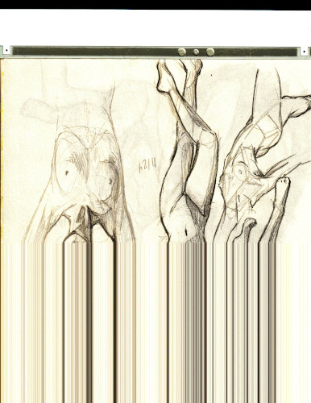

I had so much trouble getting these bad boys in a file. I used 2 sketchbooks over these months. The first was a 11x14" and the second was a 9x12". The first does not even pretend to fit in the scanner. There's no helping it. The smaller one almost maybe fits in the scanner. I tried a bunch of pages from it and found it stopping in the middle of a page and asking for the next page.
Look mom, I'm an real art!!!!!
I ended up taking all of them on my camera, cropping in GIMP manually, editing contrast and resizing with mogrify, then creating a PDF using img2pdf. I'm not great at image editing on command line, so they're a little fried. I'm not even sure if the contrast edits are an improvement.
Regardless, please enjoy 33.9 MB of my No Draw November failure.

Ryan bought me the Pokemon TCG advent calendar again this year, so I'll also be sharing the finds from that. The inner box this year is all cardboard instead of a plastic holder. It makes it a little harder to get the items out.
Today's item is Chien Pao! He's not very cute.